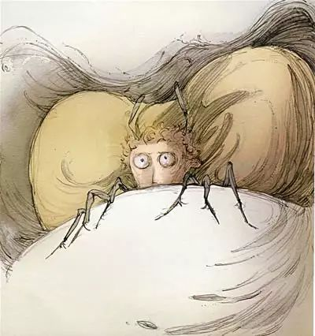
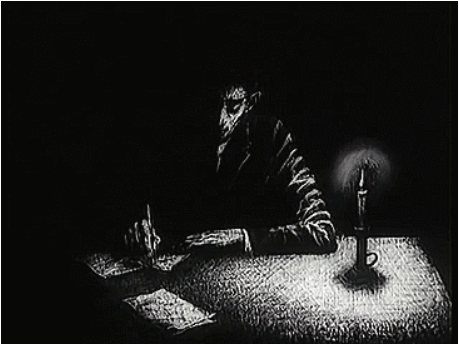

🐱写在前面: 想不到能整什么活了，搬运之前写的Essay好了，可能分成3个part。
Abstract
《判决》是卡夫卡生前出版过的一部短篇，对于理解卡夫卡及其创作有着重要意义。这部独特的短篇小说有着鲜明的”卡夫卡“的特征，具有丰富的象征意蕴，给读者以多种解读的可能。在此，我希望借这篇小论文对《判决》的内容、人物略作分析，并就其中留下的部分谜团作出自己的解答。
Introduction
1912年，9月23日，卡夫卡在日记中这样写道:“《判决》这个故事是我在22日夜至23日，从晚上10点至早晨6点，一口气写成的。由于长时间坐着的缘故，我几乎无法将僵直的腿从桌子下面抽出来。” 这一时期，卡夫卡正处于其创作的低谷期，多次在此前数月的日记中记下“什么也没写”。一气呵成地完成《判决》，可想而知是一件多么畅快的事，正如卡夫卡在同天的日记中所记录的“当故事情节在我面前展开的时候，我正处于极度的努力与欢乐之中。好像一切都说出来了，像是为一切、为最陌生的突如其来的想法准备的一场大火。”
Content
《判决》的故事并不复杂。年轻的商人格奥尔格给他远在俄国的朋友写信，准备告知朋友自己订婚的信息。接着他带着这封信去找自己的父亲，但他的父亲却先是怀疑这位朋友的存在，随后又说自己一直在与这位朋友联系，指责格奥尔格“只知道自己，没有人性”，并判决他“投河淹死”。听到父亲判决的格奥尔格，即刻奔向河边，在车声的掩盖下投水而亡。 这个故事颇有卡夫卡式的荒诞味。前一秒还虚弱在床的父亲，转眼间便“ 直挺挺地站在床上，一只手撑着天花板 ”；原本还尚显温馨的亲友，瞬间便成了互相攻讦的敌人一般；父亲的判决如此滑稽荒诞，格奥尔格却真的照做了……要用现实中的理性逻辑去解释这一切,困难重重。只有深入文本，用故事中特有的逻辑去挖掘文本，才能理解这些荒诞的情节背后的意蕴。

大体来看，小说的情节可被分为两部分——前一部分是格奥尔格独处时的内心思虑，后一部分则是格奥尔格与父亲的对峙。这两个场景在许多方面有着相当大的反差：前者的氛围温暖、节奏缓慢、仿佛沐浴着晴朗阳光，后者则氛围黯淡、节奏陡然加快、仿佛在黑暗中与魔鬼争斗。这种差异可以从许多描写中体现出来。
最美好的春季里一个星期天的上午……他刚写完一封信给居住在国外的青年时代的朋友，漫不经心地将信装进信封，然后双肘撑在书桌上，凝望窗外的小河、桥梁和对岸淡绿的小山冈。
上述引文是小说开头对格奥尔格的动作描写，从中可以看出写完信后的他相当惬意。也难怪，此时的格奥尔格有着“光明的未来”——他即将结婚，经营的事业蒸蒸日上。对于大多数人来说，这样的人生有什么不令人满意的呢？格奥尔格似乎正是这样想的，正如他在信中写到的：“ 今天我只想说，我非常幸福；你我之间的相互关系只在这一点上起了变化:你现在有了我这样一个幸福的朋友，而不再是一个普普通通的朋友了。 ”格奥尔格的幸福与他朋友的落魄形成鲜明对比——朋友的生意清淡、在异乡也无社交联系。这种对比让格奥尔格担心朋友的自尊心会受到打击，因此迟迟没有写信通知他订婚的消息。但是，朋友的惨淡境遇恰好反衬了格奥尔格的幸福，格奥尔格的“担忧”似乎是一种幸福的人才配享有的“烦恼”。总而言之，写信时的格奥尔格是感到自己“幸福的”，他为朋友所作的担忧，也总像是他自己“幸福”的烦恼。 正是在这种幸福的心境下，小说的叙述口吻是舒缓的，氛围是温暖的。讲述者仿佛洋溢着微笑。正如卡夫卡在创作后的随笔中写道:“ 一切在他(格奥尔格)眼中，都显得那么安宁，包括那一闪即逝的伤感。 ”
格奥尔格手里拿着这封信在书桌前坐了很久，把脸转向窗户。有一个过路的熟人从小巷里跟他打招呼，他正想得出神而在微笑，刚好作为对人家的回礼。
但是，当格奥尔格拿着信，来到父亲房间时，形势急转直下——
甚至在这个晴朗的上午，他父亲的房间还是那样阴暗。矗立在狭窄庭院另一边的高墙投下了这般的阴影。父亲坐在靠窗的一个角落里，这个角落装饰着格奥尔格亡母的各种各样的纪念物，他正在看报，把报纸举在眼前的一侧，以弥补一只眼睛视力的不足。 “这里黑得真受不了。”他(格奥尔格)接下去说。
在父亲的房间里，基调是阴暗的，这种黑暗给人以压抑的感觉。这与前文中的幸福感可截然不同。巨大的反差，几乎明示了情节上的重大转折——格奥尔格以为他所拥有的那些幸福，将在与父亲的对峙中被一点点摧毁。同时，如果还能想起小说的题目《判决》的话，也不免会感觉到父亲房间里反常的“审判”氛围。“亡母的纪念物”，像是为某种仪式准备的；“把报纸举在眼前的一侧”，说明有另一侧的眼睛能监视着房间中发生的一切(侦探小说中的常见动作)。虽说这有些过度解读，但是在阅读的时候联想到这样的情景，倒是有助于理解后文中父亲与格奥尔格的对峙。

父亲的这两句话，带来了小说中的第一个荒谬——
“难道你在彼得堡真有这样一位朋友?” …… “你没有朋友在彼得堡。你总是一个爱开玩笑的人，连我也想愚弄。在那儿你怎么会有一个朋友呢！我根本就无法相信。”
这位格奥尔格眼中如此重要的朋友，竟然在父亲眼中不存在？在此之前，我们所接受的都是格奥尔格视角下的陈述，他内心的思考是如此细腻真实，以至于我们很难相信那些可能会是编造的谎言。但在这里，父亲视角的引入带来了激烈的冲突。两种视角之间的裂隙几乎无法弥合——朋友占据了相当重要的地位。 随后，在格奥尔格像 照顾婴儿一样地 照顾父亲，把他抱上床、盖上被子后(这里的一系列描写值得思考，之后再谈)，父亲又给我们带来了第二个荒谬——
“我当然认识你的朋友。他要是我的儿子倒合我的心意。这些年来你一直在欺骗他。难道不是这样吗？你以为我没有为他哭泣过吗？因此你把自己关在办公室里，——经理有事，不得打扰——就是为了你可以往俄国写那些说谎的信件。”
前文出现的矛盾被瞬间反转——朋友的存在确凿无疑，但父亲却和朋友一起站在了格奥尔格的对立面。矛盾被激化到了顶峰，刚才还“虚弱”的父亲骄傲地指控着格奥尔格，将一幅完全不同的世界图景展现给读者——他“背叛”母亲，“出卖”朋友，企图压倒父亲，他的生意也不过是父亲的事先准备。这时，审判的味道也变得更浓了。且看这个镜头:“ 他(父亲)只用一只手轻巧地撑在天花板上。 ”此时的父亲站在床上，仿若巨人般撑着“天”。格奥尔格呢？“ 格奥尔格站在一个角上，尽可能地离他父亲远一点。 ”我总是觉得，这里的格奥尔格更应该是“缩在角落里的”，用父亲的“伟大”与儿子的“卑微”相对比，也许更能体现出父亲在审判时表现出的权威。
这一场审判，在读者看来其实是相当荒诞的，正如格奥尔格对其的讥讽与解构——“一场滑稽秀”。但是，即便采取了解构的态度，格奥尔格显然还是受到了审判的影响。他咬到了舌头，说话嗓音也变了，最后甚至接受了父亲的判决——“投河淹死”。小说就此结束，却意犹未尽，留给我们一个巨大的谜团——似乎有着光明未来的格奥尔格，为何会接受父亲荒谬的判决?我将在分析父亲和格奥尔格的形象之后，给出自己的“答案”。